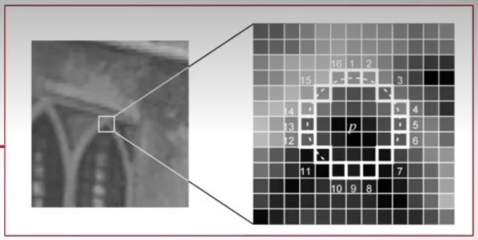
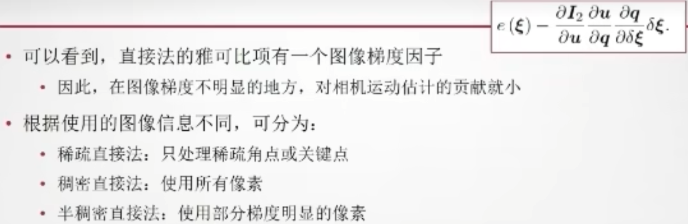

slam 方向主要是作为机器人的地图构建与轨迹判断。利用相机的照片估计机器人距离物体的距离。
# 旋转矩阵
A=RA'
A 为三维向量，R 为 3*3 的旋转矩阵。
- 旋转矩阵为正交矩阵，他的逆与他的转置相等
- 旋转矩阵的行列式为 + 1
在 C++ 的 eigen 库中通过乘法 * 旋转某个向量
# 旋转向量 / 角轴
- 除了旋转矩阵之外的旋转表示
- 三维旋转：三自由度，用 R³ 向量表示。方向为旋转轴，长度为旋转过的角度
w=jn（j为角度，n为单位方向向量，w为轴） |
角轴与旋转矩阵的不同：
- 旋转矩阵：九个量，有正交性约束和行列式值约束
- 角轴：三个量，没有约束
角轴也就是李代数。
转换关系：
- 轴角（旋转向量）转旋转矩阵：罗德里格斯公式
- 旋转矩阵转轴角：
- 角度：o=arccos ((tr (R)-1)/2)
- 轴：Rn=n.
在 C++ 的 eigen 库中通过乘法 * 旋转某个向量
# 变换矩阵
变换矩阵是为了将旋转（旋转矩阵）和平移可以放入同一个矩阵。
将其写成 b=Ta
在 C++ 的 eigen 库中通过乘法 * 变换某个向量（旋转 + 平移）
# 四元数
四元数有三个虚部，可以表达三维空间中的旋转
虚部间的关系：i²=-1，ij=k，ji=-k，jk=i，kj=-i，ki=j，ik=-j
四元数和角轴的关系
- 角轴到四元数：
- 四元数到角轴：
类似可知四元数亦可转换为旋转矩阵、欧拉角（欧拉角将旋转分解为三次不同轴上的转动，以便理解）
四元数相比与角轴、欧拉角的优势：紧凑、无奇异性。
用四元数旋转一个空间点，即将其在三维空间的三个坐标分别赋值在四元数的三个虚部，实部为 0，则其成功变为用四元数表示的坐标
在 C++ 的 eigen 库中通过乘法 * 旋转某个向量
# 李群与李代数
- 三维世界中刚体运动的描述：旋转矩阵、旋转向量（角轴）、欧拉角、四元数。
- 除了表示之外，我们还要对它们进行估计和优化。
- 旋转矩阵自身带有约束（正交且行列式为 1），作为优化变量时会引入额外的约束，使优化变得困难。
- 李代数上可以变成无约束优化。
# 李群李代数基础
三维旋转矩阵构成了特殊正交群 SO (3) R^
三维变换矩阵构成了特殊欧式群 SE (3) R^
- 群是一种集合加上一种运算的代数结构。
- 记集合为 A，运算为.，那么当运算满足以下性质时，称（A，.）成群：
- 封闭性
- 结合律
- 幺元
- 逆
李群（Lie Group）：
- 具有连续（光滑）性质的群。
- 既是群也是流形。
- 直观上看，一个刚体能够连续地在空间中运动，故 SO (3) 和 SE (3) 都是李群。
- 但是，旋转矩阵 SO (3) 和变换矩阵 SE (3) 只有定义良好的乘法，没有加法，所以难以进行取极限、求导等动作。
李代数：与李群对应的一种结构，位于向量空间。
- 通常记作小写的 so (3) 和 se (3)。
- 事实上是李群单位元处的正切空间。
李代数的引出：
- 任意旋转矩阵 R，满足：
# 李代数求导与扰动模型
该式说明，对任意 t，都可以找到一个 R 和一个 的对应关系
- 该关系称为指数映射
- 这里的 称为 SO (3) 对应的李代数：so (3)，并且 so (3) 的物理意义就是旋转向量
李群经过对数映射变为李代数
李代数经过指数映射变为李群
对 R 对应的李代数加上小量，求相对于小量的变化率（导数模型）；
对 R 左乘或右乘一个小量，求相对于小量的李代数的变化率（扰动模型）。
# 相机模型
- 小孔成像模型

原始形式：\(\frac Z f\)=\(\frac {-X} {X'}\)=\(\frac {-Y} {Y'}\)
翻转到前面：\(\frac Z f\)=\(\frac {X} {X'}\)=\(\frac {Y} {Y'}\)
整理之后：X'=f\(\frac X Z\) Y'=f\(\frac Y Z\)
- 成像平面下 X,Y,Z 到像素坐标 u，v
其中 与 分别表示 x 轴与 y 轴的缩放 与 表示 x 轴与 y 轴的平移
可以进一步化简为：
当 Z=1 时为归一化平面坐标，当 Z 有确切的值时，为三维的 3D 坐标
我们称矩阵 K 为内参（相机出厂自带的参数），P 为相机坐标。
从像素坐标到相机坐标再到世界坐标，实现了世界坐标到像素坐标的变换
# 双目模型
# 图像
有彩图与深度图即可得到像素坐标 (u,v)，然后根据公式可得相机坐标 (X,Y,Z)，最后可以根据相机位恣（旋转 + 平移）即可推出世界坐标。
# 非线性优化
# 状态估计问题
- 为运动方程的噪声。
- 为观测方程的噪声。
历史上很长一段时间使用滤波器求解状态估计，但近些年非线性优化已成为主流。
- 先验分布：根据一般的经验认为随机变量应该满足的分布。先验分布是你瞎猜参数服从啥分布。
- 后验分布：通过当前训练数据修正的随机变量的分布，比先验分布更符合当前数据。后验分布是你学习经验后有根据地瞎猜参数服从啥分布。
- 似然估计：已知训练数据，给定了模型，通过让似然性极大化估计模型参数的一种方法。似然估计是你猜参数是多少，才最能解释某些实验结果。
后验概率
若老王花了一个小时的时间完成了 10 公里的距离，那么很大可能是骑车过去的，当然也有较小可能老王是个健身达人跑步过去的，或者开车过去但是堵车很严重。若老王一共用了两个小时的时间完成了 10 公里的距离，那么很有可能他是走路过去的。若老王只用了二十分钟，那么很有可能是开车。这种先知道结果，然后由结果估计原因的概率分布，p (交通方式 | 时间)，就是后验概率。
先验概率
老王早上起床的时候觉得精神不错，想锻炼下身体，决定跑步过去；也可能老王想做个文艺青年试试最近流行的共享单车，决定骑车过去；也可能老王想炫个富，决定开车过去。老王的选择与到达目的地的时间无关。先于结果，确定原因的概率分布，p (交通方式)，就是先验概率。
似然函数
老王决定步行过去，那么很大可能 10 公里的距离大约需要两个小时；较小可能是老王平时坚持锻炼，跑步过去用了一个小时；更小可能是老王是个猛人，40 分钟就到了。老王决定骑车过去，很可能一个小时就能到；较小可能是老王那天精神不错加上单双号限行交通很通畅，40 分钟就到了；还有一种较小可能是老王运气很差，连着坏了好几辆共享单车，花了一个半小时才到。老王决定开车过去，很大可能是 20 分钟就到了，较小可能是那天堵车很严重，磨磨唧唧花了一个小时才到。这种先确定原因，根据原因来估计结果的概率分布，p (时间 | 交通方式)，就是似然估计。
从最大似然到最小二乘
- 为运动方程轨迹当前理论上的值， 为运动方程实际上的值
- 为观测方程像素当前理论上的值， 为观测方程实际上的值
当误差最小时，显然得出最大似然估计值。
对于 J (x) 函数，有以下解释：
- 直观解释
- 由于噪声的存在，当我们把估计的轨迹与地图代入 SLAM 的运动、观测方程中时，他们并不会完美成立。
- 此时就调整状态的估计，使得误差最小化。
- 该问题有何结构？
- 由许多个误差的平方和组成。
- 虽然总体维度高，但每个项很简单，只关联 2 个变量。
- 如果用李代数表达位姿，那么是无约束优化问题。
- 如何求解？
- 下面先来介绍通用的非线性最小二乘问题。
# 非线性最小二乘
迭代方式：
梯度：指函数增长的方向；增量方向取负梯度即为取函数下降方向
- 最速下降法和牛顿法虽然直观，但实用当中存在一些缺点
- 最速下降法会碰到 zigzag 问题（过于贪婪），导致迭代次数多
- 牛顿法迭代次数少，但需要计算复杂的 Hessian 矩阵
- 能否回避 Hessian 的计算？
- Gauss-Newton 高斯牛顿
- Levenberg-Marquadt
- Gauss-Newton 简单实用，但 当中无法保证 H 可逆（二次近似不可靠）
- Levenberg-Marquadt 方法一定程度上改善了它
- G-N 属于线搜索方法：先找到方向，再确定长度
- L-M 属于信赖区域方法（Trust Region），认为近似只在区域内可靠
- 考虑近似程度的描述\rho=\(\frac {f(x+\Delta x)-f(x)} {J(x)\Delta x}\) 实际下降 / 近似下降
- 若太小，即实际下降 < 近似下降，则认为不可靠，减小近似范围
- 若太大，即实际下降 > 近似下降，则认为可靠，增加近似范围
💡
LM 相比于 GN，能够保证增量方程的正定性
- 即认为近似只在一定范围内成立，如果近似不好则缩小范围
从增量方程上来看，可以看成一阶和二阶的混合
- 参数 控制着两边的权重
小结
- 非线性优化的主要方法：最速下降、牛顿、G-N、L-M、DogLeg 等
- 与线性规划不同，非线性需要针对具体问题具体分析
- 问题非凸时，对初值敏感，会陷入局部最优
- 目前没有非凸问题的通用最优值的寻找办法
- 问题凸时，二阶方法通常一两步就能收敛
实践：CERES
- 实验：曲线拟合
- 设曲线方程：
- 我们希望得到一些带噪声的样本数据：x，y
- 希望拟合（回归）曲线参数：a，b，c
实践：G2O
# 视觉里程计
# 特征点法
在经典 SLAM 模型中是以位姿和路标（Landmark）来描述 SLAM 过程。
路标是三维空间中固定不变的点，能够在特定位姿下观测到
- 路标点数量充足，以实现良好的定位
- 路标点具有较好的区分性，以实现数据关联
在视觉 SLAM 中，可利用图像特征点作为 SLAM 中的路标
特征点：图像中具有代表性的部分
- 可重复性
- 可区别性
- 高效
- 本地
特征点的信息
- 位置、大小、方向、评分等──关键点
- 特征点周围的图像信息──描述子
- 例子：SIFT/SURF/ORB 见 OpenCV features2d 模块
例子：ORB 特征
- 关键点：Oriented FAST
- 描述：BRIEF
FAST
- 连续 N 个点的灰度值大于中间点
- 
Oriented FAST
- 在 FAST 基础上计算旋转
特征匹配
- 通过描述子的差异判断哪些特征为同一个点
- 暴力匹配：比较图 1 中每个特征和图 2 特征的距离
- 加速：快速最近邻（FLANN）
# 2D-2D：对极几何
特征匹配之后，得到了特征点之间的对应关系
如果只有两个单目图像，得到 2D-2D 间的关系──对极几何
如果匹配的是帧和地图，得到 3D-2D 间的关系──PnP
如果匹配的是 RGB-D 图，得到 3D-3D 间的关系──ICP
八点法的讨论
- 用于单目 SLAM 的初始化
- 尺度不确定性，归一化 t 或特征点的平均深度
- 纯旋转问题：t=0 时无法求解
- 多于八对点时：最小二乘或 RANSAC
小结
2D-2D 情况下，只知道图像坐标之间的对应关系
- 当特征点在平面上时（例如俯视或仰视），使用 H 恢复 R,t
- 否则，实用 E 或 F 恢复 R,t
求得 R,t 后：
- 利用三角化计算特征点的 3D 位置（即深度）
# 三角化
# 3D-2D：PNP
已知 3D 点的空间位置和相机上的投影点，求相机的旋转和平移（外参）
代数的解法 / 优化的解法：
- 代数的：DLT/P3P/EPnP/UPnP/……
- 优化的：Bundle Adjustment
DLT 将 R,t 看成独立的未知量，忽略了 R 本身正交且行列式为 1 的性质，所以其结果不一定都符合，所以在求出结果后，需要将 t 组成的矩阵投影回 SO (3)（通常用 QR 分解实现）；此外也可代入内参矩阵 K，但 SLAM 中一般假设 K 已知，所以这里没有代入。
# P3P
# Bundle Adjustment
已知 3D 点 P，但是由于相机的旋转和平移的初始值不是很好，即外参（李代数）存在一定的误差。：本该投影到的位置；\^{P_2}：实际投影到的位置；e：误差。尽量让误差最小化使得相机的旋转和平移达到一个比较优化的值。
令误差为等式左右两边相减，问题在于如何去求误差关于相机位姿的导数，或者，按照哪个方向去优化相机的位姿（旋转 + 平移），即相机位姿发生变化时，误差会往哪个方向变？
假如，此时不光相机位姿不知道，连 3D 点都不知道，也就是说 3D 点也是会变的，那么可以直接对 3D 点求导，去推误差关于 3D 点的变化。
# 3D-3D：ICP
ICP 也可以从非线性优化角度求解，但：
- 已知匹配时，ICP 问题存在唯一解或无穷多解的情况。在唯一解的情况下，只要能找到极小值解，那么这个极小值就是全局最优值。所以在正常情况下，SVD 结果和优化一样，且优化很快收敛。
注：
- 在激光情况下，匹配点未知，将指点最近点为匹配点。此时问题非凸，极小值不一定为最小值。
- 利用 ** 非线性优化（Bundle Adjustment 万金油）** 可以将 ICP 与 PnP 结合在一起求解。
# 直接法和光流
回忆特征点法 VO 的做法
| 做法 | 耗时 |
|---|---|
| 在图像中提取特征点并计算特征描述 | 非常耗时，~10ms in ORB |
| 在不同图像中寻找特征匹配 | 非常耗时，O () |
| 利用匹配点信息计算相机位姿 | 比较快速，<1ms |
能否不使用特征匹配计算 VO？
不提特征计算 VO 的思路：
- 通过其他方式寻找配对点
- 光流
- 无配对点
- 直接法
一般分为稀疏光流和稠密光流
- 稀疏以 Lucas-Kanade（LK）光流为代表
- 稠密以 Horn-Schunck（HS）光流为代表
- 本质上是估计像素在不同时刻图像中的运动
# LK 光流
设 t 时刻位于 x,y 处像素点的灰度值为
在 t+dt 时刻，该像素运动到了
- 希望计算运动 dx,dy
灰度不变假设：
注意：灰度不变是一种理想的假设，实际当中由于高光 / 阴影 / 材质 / 曝光等不同，很可能不成立。
# 直接法
光流仅估计了像素间的平移，但没有用到相机本身的几何结构，没有考虑到相机的旋转和图像的缩放；直接法则考虑了这些信息。

# 后端
# EKF 滤波器形式后端
从带噪声的数据估计内在状态──状态估计问题
- 渐进式（Incremental）
- 保持当前状态的估计，在加入新信息时，更新已有的估计（滤波）
- 批量式（Batch）
- 给定一定规模的数据，计算该数据下的最优估计（优化）
EKF
- 优点：
- 推导简单清楚，适用各种传感器形式
- 易于做多传感器融合
- 缺点：
- 一阶马尔可夫性过于简单
- 可能会发散（要求数据不能有 outlier）
- 线性化误差
- 需要存储所有状态量的均值和方差，平方增长
# BA 与图优化
BA 问题与图结构的关系
- BA 虽然是个纯优化问题，但亦可以用图模型清晰地表述出来
- 顶点为优化变量，边为运动 / 观测约束
- 本身还有一些特殊的结构
考虑在位姿 i 处对路标 j 的一次观测：
特点：
- 每个观测只关系两个变量，其中一个是相机，一个是路标
- 纯视觉 BA 中，不存在相机与相机 / 路标与路标之间的关联
- 整个误差函数由许多个这样小的项组成